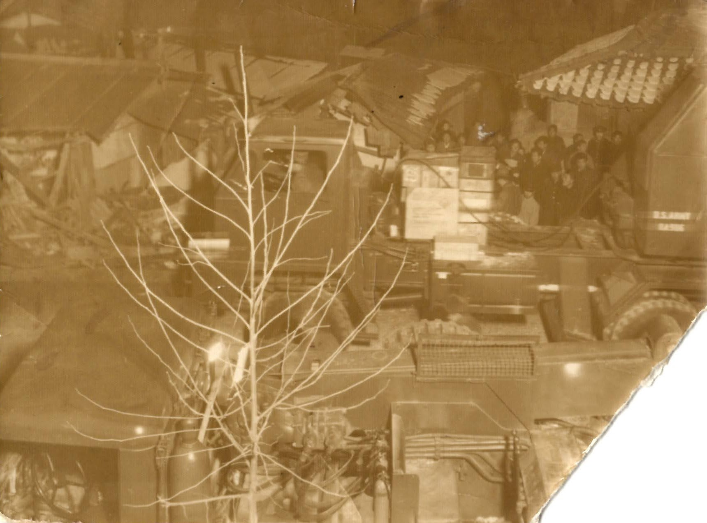

A visit with old persons leaves one with,
something to think about
a resolution to improve
something you never knew - about your self or life.
Especially, if that person lives far away and haven’t talked to you in years.
As part of the Lunar (Chinese) New Year celebration, mom and I called some of the relatives in Korea.
As my mom and her younger sister spoke, they started to sound just like characters from CLOY (Crash Landing on You).
Mom explained that my father’s family came down to South Korea nearly a decade early so they had a chance to pick up the Southern Accent.
My mom’s family, on the other had, came during the War so they didn’t have a chance to assimilate as a teenager.
Then my uncle, who is 13 years younger than my father, began to re-live the old days in Incheon area.
The house we lived in during my growing up years, faced a busy road, but it was situated about 2 meters below the road.
One day, a truck owned by the US military1 ran off the road and crashed into our house.
My uncle and I were sitting near a portable fireplace 난로(暖爐) in an extension of rooms called 마루.
As the truck crashed into the house, its axle rested near the extended floor and my uncle and I were inches from the tire and the axle.

My mother was traumatized by the experience and couldn’t remember this had happened.
Hearing this story affected me for days.
Not only, was I grateful that our lives were spared. But also that my life may have a purpose that I need to work on.
Early in this section, Mr. Gladwell invokes the World War II bombing of London as a valid David and Goliath mismatch: German efforts to intimidate the British created the “remote miss,” a survivor’s exhilaration, in some who lived through weeks of bombardment.
From a NYT review of Malcolm McDowell’s book
Felt that God protects our lives so that we can finish the work we were assigned in this life.
Footnotes
there was a military base nearby↩︎